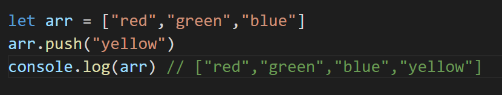
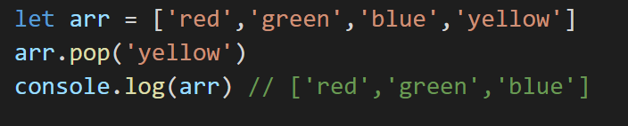
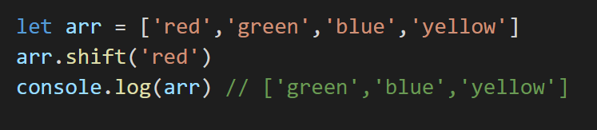
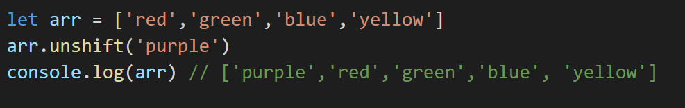
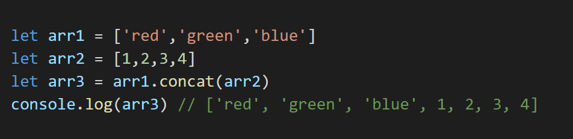
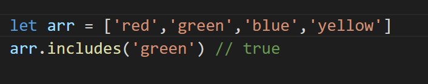
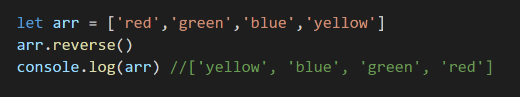
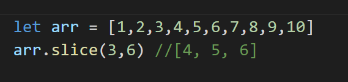
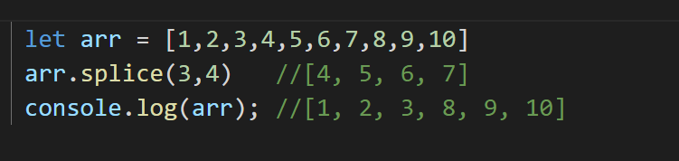
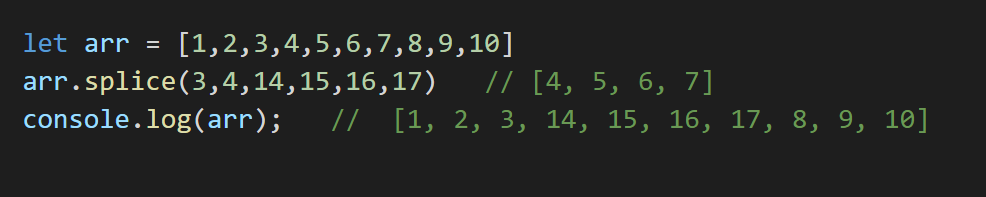

Array Methods in JavaScript
Priyanshu Shrivastava
september, 2021
An array is a data structure that stores the ordered collection of the data e.g. (music playlist, recipes, etc). In In Javascript, arrays are heterogeneous means we can store multiple types of data irrespective of their data types in one array because in javascript variable has no data type. To perform any operation or manipulate array in Javascript array methods. Array Methods are built-in functions in Javascript and each method has different functionality which saves our time writing a function to perform operations on the array from scratch.
Basic Array Methods
1. push()
This method is used to insert single or multiple elements at the end of the array.
2.pop()
The pop() method is used for removing elements from the last index of the array.
3. shift()
The shift () method is used to remove elements from the starting index of the array.
4. unshift()
The unshift() method is used for inserting single or multiple elements from the starting index of the array.
5. concat()
This array method is used for the concatenation of two or more arrays and returns a new array.
6. includes()
This array method is used to check whether a particular element exists in the array if that particular element is present in the array it returns true, else it returns false.
7. reverse()
This method is used to reverse an array. reverse() is a destructive function because it makes changes in the original array.
8. slice()
slice() method cuts the array from a specified start index to the last index and returns it into a new array.slice() is a non-destructive method and accepts max two arguments start and the last index, of array copy user wants. slice() method always cuts the array in forwarding direction and if we do not pass any arguments in the slice() method it returns the copy whole array.
9.splice()
The splice() method almost functions as a slice() method, but it is a destructive method ,so when using the The splice() method, it cuts the elements from the original array. In the splice() method we can pass a total of three arguments first is the specified starting index and the second argument takes numbers of the element to be cut from that specified starting index, and in the third argument, we pass elements that will be pushed in the array.
 Conclusion
These are some basic array methods and there are more advanced array methods for reference checkout this article. Using this method, making changes to the array becomes easier.